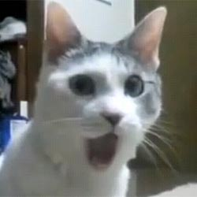
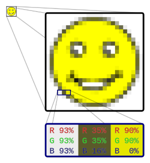
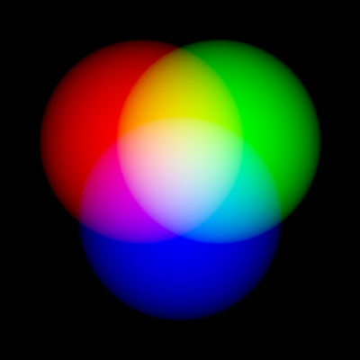
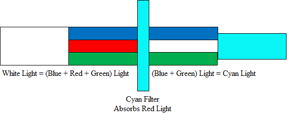
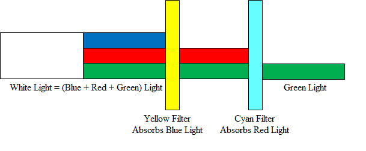
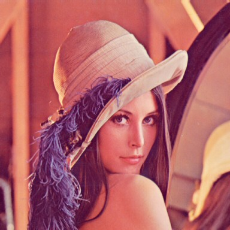
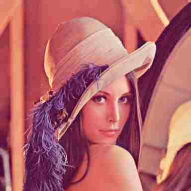
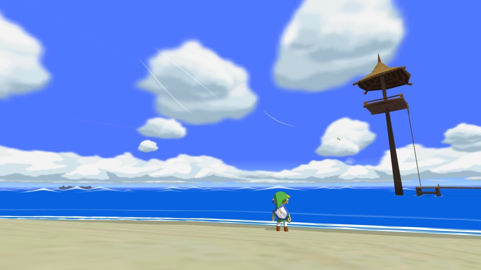
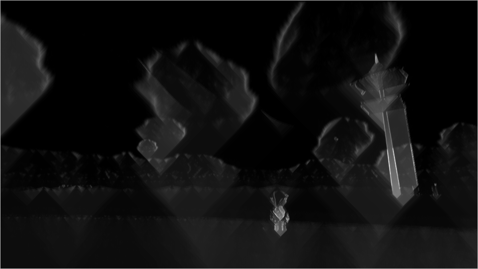
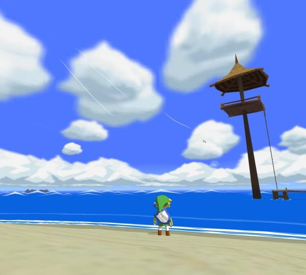

Chapter 12 Picture This
We've talked a lot about pictures of cats, but it's time for us to put our money where our mouth is. In this section, we'll discuss how your computer actually represents and displays cat pictures, as well as some other less interesting stuff, I guess.
File Formats
It turns out that while cat photos are by far the most adorable things your computer can store, they're still just 0s and 1s. Getting tired of me saying that yet? Waaaay back in the day, we talked about how we can translate 0s and 1s into textual data and love hotels. Remember how? We used something called a character encoding, which, like Morse Code, simply defined a way to translate numbers into characters. We said that the number 65 represented a capital 'A' in ASCII, and some bigger number represented a love hotel in UTF-8. So, we know how we can store plain old text, but we often want to store more interesting information. For example, I send all of my emails in a pink Comic Sans on a glitter background. While ASCII or UTF-8 can represent the textual content of my email, ASCII doesn't define a way to specify a font or color for my text. As we'll see later, we can use HTML to describe these features of text, but when I send someone a Microsoft Word document, the name of the file ends in .doc (or .docx), which isn't quite HTML. That .doc is called the filename extension, which is often used to indicate a file's format. Just as protocols like HTTP defined a standardized set of rules, the purpose of a file format is to define a standardized way of representing information. For example, somewhere in the overwhelmingly long specification for .doc files, Microsoft has specified how to store pink Comic Sans text. By the way, I wouldn't recommend actually sitting down and reading that novel, which actually contains sentences like "CHPX's are a grpprl, not a CHP" (page 35). Sounds like something out of Harry Potter's Fantastic Beasts and Where to Find Them if you ask me. In any event, a file's format simply tells your computer how the bits of a files should be interpreted. As we'll see, those 0s and 1s could represent an image, a sound, or a video, but without any kind of rules for interpreting a file's bits, they're essentially meaningless!
Let's take a look at an example. Here I have a big text file with a whole bunch of numbers. If you download this file and open it up using a program like TextEdit on a Mac or Notepad on Windows, you'll see a big list of random numbers. So, it looks like our text editing program is opening up this file and interpreting the bits as ASCII representations of characters. Now, try opening this same file in a different program, called GIMP. GIMP is an image editing program, just like Photoshop, available for Windows, Mac, and Linux free of charge. Once you've downloaded and installed GIMP, open up that same file. You should see something like the below.

I know the first time I did this, I was as shocked as that cat is. That file you downloaded is in a format called PPM, or Portable PixMap. PPM is just one way of representing an image, but using only ASCII characters! So, that same sequence of bits has a completely different meaning when given to a different application. We never changed the bits of the PPM file, we just interpreted them in two different ways: as an image and as text.
While browsing the Internet or the photos from your last vacation, you probably encountered a few different file formats specific to images. For example, a photo of your cat from your digital camera may be stored as a JPEG, an old piece of feline clip art may be stored as a BMP (or bitmap), and a cat trying to jump may be stored as a GIF. All of these acronyms are just different ways of representing images using binary data. So, when an app like Preview or Photoshop opens up an image, it will first need to figure out what format the image is in, and then interpret the bits of the file accordingly!
{kind=link}
Raster Graphics
Let's first take a look at the bitmap format, one of the simplest ways to store an image. Think of an image as a grid of squares, where each square is filled with only one color; this is kind of structure is called a raster graphics image. Each of these small squares, called a pixel, can be filled with exactly one color. Check out the picture below. At the top-left, we have an image smiley face. (He's happy because he's about to learn about raster graphics, which sounds like an impressive thing to know about.) Over to the right, we have a mega enlarged version of the same image, where we can make out the individual squares of the grid that creates the image smiley face. In fact, you might describe this image as "pixelated," since we can see the individual pixels making up the image. We can see that each of these squares is just a single color, but once we shrink the image down a bit, it gets hard to tell where one square ends and another begins, which allows us to see a happy face rather than a bunch of squares.

Colors
At the bottom of this image is an even more mega enlarged version of the smiley, this time zooming in on just three pixels (where each pixel is just a colored square). Each of these pixels reminds me of elementary school art class, where it was really fun to play with paint and mix colors together. If you mixed together red paint and blue paint, you always got some shade of purple paint. If you then put that paint on the wall, your teacher then probably yelled at you. In any case, the basic idea behind paint mixing is that we can create a huge range of colors just by mixing together some much smaller number of colors. In fact, if we're clever about what we choose as our primary colors, we can make any color we can possibly think of using just three colors as a base.
As the picture above suggests, let's start off with red, blue, and green as our three primary colors. Now, rather than think about mixing paints, consider three lights, one of each color, pointed at the same wall in a pitch black room. If we turn on the red light a little bit, then we'll get a little bit of red in the room, but our wall will still be mostly black. But, if we turn the red light up all the way, then without a doubt, we'll have a completely red wall in front of us. If we turn up both the red and green lights, then the colors will mix to form the color yellow. Finally, if we turn all three lights on, then our wall will be completely white. The combinations of these lights looks something like this:

This method of mixing colors is called additive color mixing, since we're essentially adding the colors produced by each of the lights together. This same principle is used to color each pixel in our smiley. Each square has its own combination of red, green, and blue lights that when mixed together, produces a single color. For example, the pixel on the left has an equal amount of red, green, and blue, so the result is a pixel that looks pretty white, while the rightmost pixel is only red and green, which produces a yellow pixel. Because we picked red, green, and blue, this color model is called RGB, and we express colors using combinations of these three primary colors.
The numbers above are given in percentages, but what are they percentages of? That depends on an image's color depth, or the number of bits that are used to represent the color of a single pixel. For example, if we use 1 bit for each pixel, then we can only represent black and white images, since each pixel will be represented by a 0 (aka black) or a 1 (aka white). Instead, if we use a larger number of bits for each pixel, then each pixel can take on a wider range of colors. It's common for bitmaps to use 24 bits for each pixel, which means 8 bits are used for each of the three colors. In decimal land, that means each color takes on a value between 0 and 255, since 255 is the largest number we can represent with 8 bits.
Often though, we'll express colors using hexadecimal values. Recall that hexadecimal is a base-16 number system (just like binary is a base-2 number system), which means that a hexadecimal "digit" can have the values 0-9 as well as A-F. Because each color is stored using 8 bits, we only need six hexadecimal digits to express a 24-bit color (since each hexadecimal digit represents a 4-bit value). As a convention, hexadecimal colors are prefixed with the hash character (#), so when someone looks at something like #DC143C, they know immediately that they're looking at the representation of a color. So, the color #FF0000 (red) is a lot of red, no green, and no blue, while the color #0088FF (sky blue) is no red, a bit of green, and a lot of blue. As usual, computer scientists went a bit overboard in producing an official list of names for common hexadecimal color values, which you can find here. My personal favorites are "Blanched Almond," "Papaya Whip," and "Linen."
By the way, why did we randomly start talking about lights instead of sticking with paint? It turns out that these two things are a bit different; while we said that mixing light colors was a form of additive color mixing, the process of mixing paints or inks is subtractive. While we started in a pitch black room with additive color mixing, subtractive color mixing starts off with a beam of white light. Remember, that white light is just a combination of all colors, since we saw earlier that turning on all of the primary color lights resulted in pure white. By the magic of physics, when that beam of white light hits a colored surface, some of the light will be absorbed by the surface, which means it won't be totally white any more. For example, the color cyan (aka "light blue" for those of you who are as useless in a paint store as I am) absorbs the color red, so that means that the white light that once consisted of red, green, and blue will now only consist of green and blue, which happens to be cyan. Here's what we mean:

Now, let's try adding another color to the mix. The color yellow absorbs blue light, so if we add that to the mix, then we'll be left only with green light, like this:

In this subtractive model, then, we can say that cyan and yellow make green. To round out our three primary colors, we'll add the color magenta, since that absorbs green light. So, our three primary colors in the subtractive color model are cyan, magenta, and yellow, or CMY (sometimes called RYB). When we look at ink on paper or paint on a canvas, surfaces will be illuminated by white light from a light source (whether that be the sun or a light bulb), so we'll want to use these as our three primary colors. However, the LED lights powering your computer's display use RGB, since they function by adding the colors produced by different lights together.
Bitmaps
Alrighty, now that we have a handle on how colors can be represented, let's come back to the bitmap file format. Remember, a bitmap is simply a sequence of bits, those bits just won't represent text anymore. The first two bytes of any bitmap file are the same: the magic number 0x42 0x4D. That "0x" just means that we're using hexadecimal to represent the value, and 0x42 is the same as the decimal number 66, while 0x4D is the same as the decimal number 77. (Fun challenge: why?) This is simply an indicator to any software application that this file is a bitmap. Of course, this magic number doesn't guarantee that the file is a bitmap. After all, I can create a text file that starts with the letters "BM," and that would be the same as the first two bytes of a bitmap file. So, every bitmap file starts with the same magic number, but seeing that magic number at the beginning of a file doesn't guarantee that we're dealing with a bitmap file.
After that, we have some metadata about the file, like the width, height, and the size of the image. In general, the term "metadata" refers to data that describes a file's data; as we'll see, an MP3 file's metadata could include the name of the artist or the album of the track. Finally, the bytes representing the pixels of an image come after the file's metadata. Let's take a look at what a bitmap actually looks like now. Here's a super simple bitmap file, containing only white and red pixels, that's mega enlarged so you can see the individual squares on the grid:
By the way, here is a link to the original bitmap, if you want to check it out for yourself. We can use a little program called xxd to view the individual bytes of this bitmap file, expressed in hexadecimal. If we open up a Terminal and run the following:
{kind=link}
xxd -c 24 -g 3 -s 54 smiley.bmp
Then we'll see something like this:
0000036: ffffff ffffff 0000ff 0000ff 0000ff 0000ff ffffff ffffff ........................
000004e: ffffff 0000ff ffffff ffffff ffffff ffffff 0000ff ffffff ........................
0000066: 0000ff ffffff 0000ff ffffff ffffff 0000ff ffffff 0000ff ........................
000007e: 0000ff ffffff ffffff ffffff ffffff ffffff ffffff 0000ff ........................
0000096: 0000ff ffffff 0000ff ffffff ffffff 0000ff ffffff 0000ff ........................
00000ae: 0000ff ffffff ffffff 0000ff 0000ff ffffff ffffff 0000ff ........................
00000c6: ffffff 0000ff ffffff ffffff ffffff ffffff 0000ff ffffff ........................
00000de: ffffff ffffff 0000ff 0000ff 0000ff 0000ff ffffff ffffff ........................
Woah, okay. What did we just do? The program xxd simply opens of a file and displays the value of each byte in the file as a hexadecimal number. We're interested in grouping these values into 24-bit chunks, since each pixel in the bitmap is represented by 3 blocks of 8 bits each. Also, we actually skipped the first 54 bytes of the file, since that's just bitmap metadata. The numbers to the left (followed by a colon) simply tell us where in the file we are, and we can simply ignore those dots to the right. Looking at the middle of this output, we can actually see something that resembles a smiley face. Each block that looks like ffffff represents a white pixel, while each block of 0000ff represents a red pixel. But wait a minute, I thought we said that we gave colors as RGB? Shouldn't 0000ff be pure blue then? That's still the case, but it turns out that a bitmap actually stores the bytes of its pixel values backwards, so red is all the way to the right, green is still in the middle, and blue is at the left. Kinda reminds us of the notion of endian-ness from a while back, no? To be even more difficult, it turns out that the pixels of many bitmaps are actually stored upside-down, so it's up to an image viewing application to actually flip everything right side up. But don't fret over these minor details. We can see that the basic idea behind that bitmap file format is that we'll represent each pixel with the same number of bytes, and the value of those bytes represents how much red, green, and blue the pixel contains.
Resolution
We know a raster graphics image has to be made up of a grid of squares, but how big should each square be? The answer to this question describes the resolution of an image, or the amount of information stored in the image. If we keep the size of the image the same but decrease the size of each individual pixel, then we can fit a larger number of pixels into the image, allowing us to represent more detail. Here's an example from Vimeo that demonstrates what we mean by that:
The leftmost image has a resolution of 16x16, which means that square contains 16 pixels across and 16 pixels down. On the right, however, we have a resolution of 512x512, which means we have a much larger number of smaller pixels. Because there are many more pixels to work with on the right, we can create an icon that has much more detail. With only 16 pixels to work with, it's pretty difficult to create a smooth-looking curve, and we get something that looks more like a set of steps than a curve. If you've ever used an Etch a Sketch, then you've probably been frustrated by how difficult it is to create curves. If only each individual square were smaller, you'd be able to have much more detail in your sketches! If you have no idea what I'm talking about, then please click here. Honestly, this is much more important than anything else you'll do today.
Because each raster graphic image has a grid of fixed-size squares, we can't simply increase the size of an image without sacrificing quality. For example, one way of making an image bigger is to increase the size of each square in the grid. However, the resulting image will look a lot like the enlarged red smiley or leftmost Vimeo logo: distorted and pixelated. Watching popular TV shows like CSI, though, would lead you to believe otherwise. Below is a compilation of scenes from movies or TV shows where a raster graphics image is "enhanced." But, this makes absolutely no sense! There's no way to increase the resolution of an image, so zooming in will add zero additional detail.
Lossless Compression
Alrighty, that's it for the bitmap format. Bitmaps are certainly straightforward, but the way they represent images is pretty inefficient. For example, consider the bitmap below:
GERMAN IMAGE
What do the bytes of this bitmap look like? Well, since the top of the flag is just a solid color, we're going to have a wholeeeeee lot of bytes that are exactly the same. Wouldn't it be nice if we could just say "here come 100 red pixels" rather than listing out each pixel individually? Turns out we're about 25 years too late, since a company called CompuServe beat us to it in 1987 with the development of GIF, or the Graphics Interchange Format. By the way, whether "GIF" is pronounced with a soft "g" or a hard "g" is a holy war older than time itself. Word on the street is the original developers of GIF wanted it to be pronounced like the Jif peanut butter brand, but dictionaries say both pronunciations are correct. Unlike bitmaps, GIFs are compressed, which means that GIFs can represent exactly the same information as some bitmaps using a smaller number of bits. Essentially, if two pixels that are horizontally adjacent are exactly the same, then GIF won't bother storing the information redundantly.
Of course, this method of compressing images isn't perfect. For example, consider this bitmap instead:
FRANCE IMAGE
Now, we have lots of repetition in the vertical direction rather than the horizontal direction. Unfortunately, our trick isn't going to work as well this time, since it's designed to handle the Germans, not the French (though we are still going to get some compression, compared to a bitmap). Sure enough, if we compare the sizes of these two bitmaps, the German flag is indeed smaller than the French flag, even though the images have the same width and height, and it takes the same number of bytes to represent a red pixel and a blue pixel.
This method of compression is called lossless, which means we're retaining all of the information about an image. After all, saying that 2 × 5 = 10 is exactly the same as saying 2 + 2 + 2 + 2 + 2 = 10, it just takes us a shorter amount of time to write it down. So, any lossless compression technique will represent all of the original data in a file. Though we've seen compression in the context of images, we can actually compress any old file. For example, you have have emailed a ZIP of documents to a co-worker or downloaded a RAR from a website. Both ZIP and RAR, along with other formats like GZIP and LZW, are capable of compressing any old bytes you throw at them, which can be handy if you're looking to save space on your hard drive.
ANIMATED GIFS
Lossy Compression
Lossy compression, on the other hand, is the opposite of lossless compression. While lossless compression preserves all of a file's data, lossy compression throws away some data in the interest of compressing the file even more. However, if we throw away too much information, then we might not be able to tell what our original file looked like. Here's an example of effective lossy compression:
Hey wat r u doin tmrw? I wntd 2 go 2 c Ben.
Even though most of the "words" in the above message aren't words in the English language at all, it's still pretty clear what the message is saying. We've simply reduced the number of characters necessary to express a message by throwing away letters that aren't fundamentally necessary to understanding the meaning of the message. There's a good chance you were able to read the lossily-compressed message above as:
Hey, what are you doing tomorrow? I wanted to go see Ben.
Since our original message has 57 characters (counting spaces) and our new message only has 43 characters, we can say that we've compressed the message by about 25%. We could probs compress this even more, but let's leave Ben alone and come back to image compression.
GIF is a lossless format, while JPEG, created by the Joint Photographic Experts Group, uses lossy compression. JPEG is commonly used to store digital photographs, which unlike the bitmap smiley above, have a huge number of pixels. For example, modern smartphones usually have something like a 5-megapixel camera, which means that images taken by the camera will have roughly five million pixels. More expensive cameras will have even more! The basic idea behind lossy compression is that most people (except maybe Superman) won't be able to tell the difference between an image with 5,000,000 pixels and an image with 4,999,999 pixels created by removing one of those pixels. In fact, even with compression factors on the order of 40 or 50, compressed JPEGs don't look all too different from the originals. Below, we have a JPEG compressed with a factor of 10 on the left and a JPEG compressed with a factor of 50 on the right. While the photo on the right clearly has a loss in quality, it is only 9KB in size compared to the 39KB photo on the left, so depending on the situation, that scenario might be worth it!
 
So, lossy compression worked great on those large digital photos, but here's a situation where it won't work so hot:
GREEN IMAGE
Here, every pixel in this very small image is absolutely essential to retaining the image's meaning. So, using lossy compression here probably isn't the best idea. By the way, the actual method through which JPEG images are compressed is pretty complicated and uses lots of math. I'm no good at math, but if you're interested in the particulars, check out the Wikipedia article.
Vector Graphics
Wouldn't it be cool if we could somehow enlarge an image while preserving all of its detail? While it looks like we can't do that with raster graphics, we can do that with vector graphics. Unlike raster graphics, vector graphics doesn't involve turning an image into a grid and storing the values of individual pixels. Instead, vector graphics stores images using mathematical black magic. For example, let's say we want to represent a circle. In raster graphics, we'd create a grid of squares and then trace out a circle by filling in squares with some color. Using vector graphics, we'd instead say that the equation for a square looks something like x2 + y2 = r. Now, our representation doesn't depend on any pixels. If we want to create a larger circle, we can just pick a larger value for r, and our equation will create a larger circle without any loss in quality. So, we can create a raster graphic simply by picking a size for the image, then using the equation to figure out which pixels should be colored. Yay math!
That worked out well for a circle, but how are we supposed to come with an equation for the shocked cat photo above? After all, the level of his shocked-ness can't be contained by a couple variables and some algebra. Rather than try to come up with a single equation, we'll instead divide up shocked cat into a number of smaller polygons, each of which can be described with an equation. For example, the fonts on your computer have some kind of vector representation that was created by picking some control points, or important points on characters, and fitting some curves to pass through those points. While we just saw how easy it is to go from a vector graphic to a raster graphic, it's not so simple to go the other way around, since we need to pull some equations out of a hat that approximate the raster graphic.
Seam Carving
Vector graphics are a cool way of allowing us to enlarge images, so let's look at a cool way to shrink them. Let's say we have a really wide image like the below, and we want to reduce its width.

This is a screenshot taken from The Legend of Zelda: Wind Waker, which is indisputably one of the best video games of all time. One way to we can shrink the width of this image from 960 pixels to 600 pixels is to scale it horizontally. However, if we just blindly smoosh everything together, we're going to get an image with a lot of distortion:
Notice how Link (the boy standing on the beach with the sword and shield) lost a whole lot of weight, to the point that it's clear that this image has been modified in some way. Not only does Link look distorted, but the observation tower on the right of the image also looks unrealistically thin.
Let's try something else. Looking at this image, we have a whole lot of empty ocean to the left of Link. There's a small island out there in the distance, but there really isn't anything else that's interesting in the left half of the image. So, rather than scaling the image horizontally, let's just cut out some of that boring stuff to make the image smaller. If we carve out a slice of the image containing uninteresting material, then we can stitch together the two remaining parts of the image to create a new image that hasn't been distorted!
But, how can we figure out which parts of the image are okay to cut out? As humans, we can identify "uninteresting" portions of a picture, but your computer has no idea which bytes are going to be visually pleasing to human viewers. Instead, we can compute an "energy" for each pixel, which is just a number that describes how important the pixel is to the image. In order to come up with an energy, we can compare each pixel to the ones around it. If the pixel is very different than its neighbors, like the pixels on Link's shield, then it's probably important to the image. On the other hand, if a pixel is very similar to its neighbors, like the pixels in the empty ocean, then there's a good chance that it's not very important to the image, so we can remove it. Here's what this image's "energy" looks like. High energy (aka important) pixels are white, while low energy (aka unimportant) pixels are black:

Cool, huh? Simply by comparing each pixel to the ones around it, we've actually traced out all the important components to this picture: Link, the island, and the observation tower. Now, we can go ahead and start carving away at the regions of the picture that are black, or "seams". If we do this enough times, then we'll end up with something like this:

Woah! That looks significantly less distorted. By removing low energy pixels, we were able to reduce this image's size without making it look silly. This technique is called seam carving, also known as content-aware scaling in image editors like Photoshop. If you'd like to try this on some images of your own, you can download the free Seam Carving GUI for Windows, Mac, and Linux.
3D Graphics
MESH
SUBDIVISION SURFACE
GPUs
GRAPHICS PIPELINE FROM 175
Practice Problems
- What's the difference between additive and subtractive color mixing? Give an example of each.